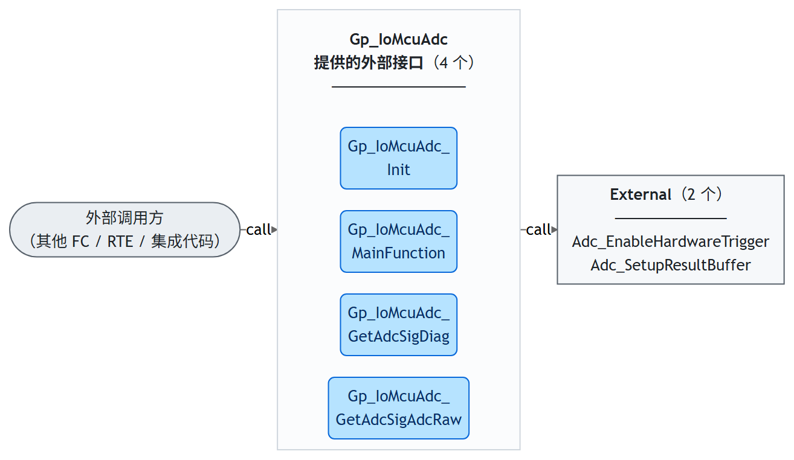
LLD-KEY: Gp_IoMcuAdc::5.1::interfaceOverview
LLD-KEY: Gp_IoMcuAdc::5.1::callgraph:Gp_IoMcuAdc_Init
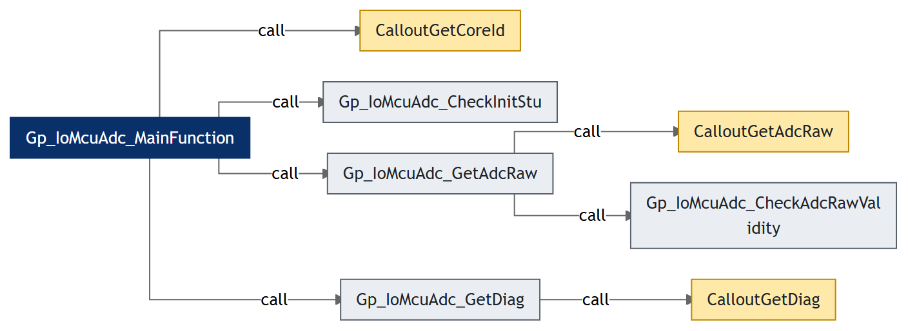
LLD-KEY: Gp_IoMcuAdc::5.1::callgraph:Gp_IoMcuAdc_MainFunction
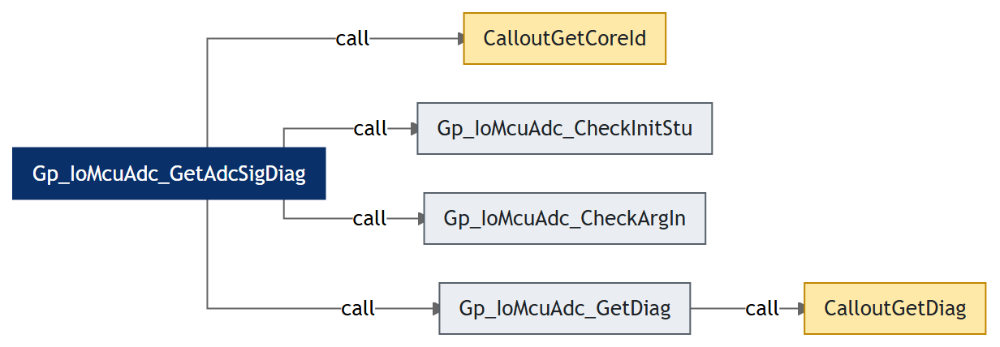
LLD-KEY: Gp_IoMcuAdc::5.1::callgraph:Gp_IoMcuAdc_GetAdcSigDiag
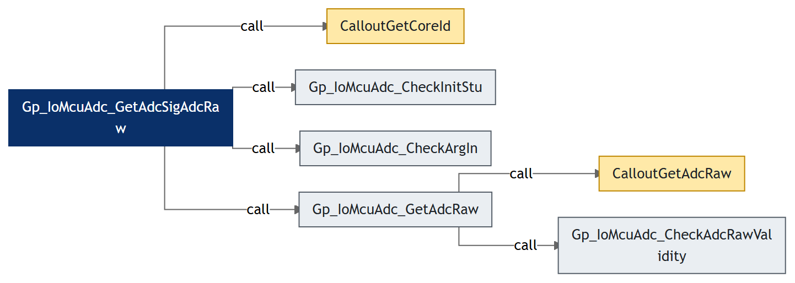
LLD-KEY: Gp_IoMcuAdc::5.1::callgraph:Gp_IoMcuAdc_GetAdcSigAdcRaw
| 接口函数 | Adc_EnableHardwareTrigger |
|---|---|
| 语法 | Adc_EnableHardwareTrigger |
| 来源分组 | External |
| 模块内调用者 | Gp_IoMcuAdc_Init |
LLD-KEY: Gp_IoMcuAdc::5.2.2.2::Adc_EnableHardwareTrigger
| 接口函数 | Adc_SetupResultBuffer |
|---|---|
| 语法 | Adc_SetupResultBuffer |
| 来源分组 | External |
| 模块内调用者 | Gp_IoMcuAdc_Init |
LLD-KEY: Gp_IoMcuAdc::5.2.2.2::Adc_SetupResultBuffer
| Service name | Gp_IoMcuAdc_Init |
| Syntax | void Gp_IoMcuAdc_Init(void) |
| Service ID[hex] | None |
| Sync/Async | Synchronous |
| Reentrancy | Non_Reentrancy |
| Parameters(in) | None |
| Parameters(inout) | None |
| Parameters(out) | None |
| Return value | void |
| Description | 本函数完成 Gp_IoMcuAdc 的初始化。先经 CalloutGetCoreId 取得当前核 ID，据此从 cfgCont 与 rtCont 中取出本核的配置地址与运行时缓冲区地址；随后逐通道置初值（AdcRaw_u16 置 ADCRAW_INVALID、Diag_u32 置 0、PollingCnt_u16 置 0、AdcSigErr_t 置 NO_ERR）。当 GP_IOMCUADC_SPEC_DEP_IF 配置为具体 MCAL 平台时，逐 ADC 组调用 MCAL 接口：先 Adc_SetupResultBuffer 注册结果缓冲（以 AdcRaw_u16 字段作 dummy 缓冲，该调用不会真正填充，且必须先于 Adc_EnableHardwareTrigger 调用以避免 ADC 模块 DET 错误），再 Adc_EnableHardwareTrigger 使能硬件触发转换。最后调用 CalloutInit 完成集成方的额外初始化。DEV_ERROR_DETECT 开启时，若 Adc_SetupResultBuffer 返回 E_NOT_OK 或 CalloutInit 返回 FALSE，则在 DET 缓冲区记录 IFID_INIT 与 ERRSTU_INIT_FAILED 并将 InitStu_t 置 INIT_FAILED，否则置 INITED，同时将 RunCnt_u32 清 0。本函数应在已使能的核上、MCAL ADC 初始化完成之后调用。 |
| 流程图 | 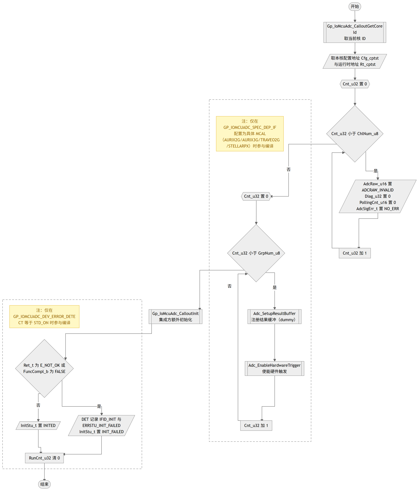 |
| 调用 | Gp_IoMcuAdc_CalloutGetCoreId Adc_SetupResultBuffer Adc_EnableHardwareTrigger Gp_IoMcuAdc_CalloutInit |
| 访问的静态全局变量 | Gp_IoMcuAdc_rtCont_lcatst |
LLD-KEY: Gp_IoMcuAdc::5.2.3.2::Gp_IoMcuAdc_Init
| Service name | Gp_IoMcuAdc_MainFunction |
| Syntax | void Gp_IoMcuAdc_MainFunction(void) |
| Service ID[hex] | None |
| Sync/Async | Synchronous |
| Reentrancy | Non_Reentrancy |
| Parameters(in) | None |
| Parameters(inout) | None |
| Parameters(out) | None |
| Return value | void |
| Description | 本函数是 Gp_IoMcuAdc 的周期处理函数，由周期任务在 Init 完成后调用。先经 CalloutGetCoreId 取当前核 ID 并取本核配置与运行时缓冲区地址；DEV_ERROR_DETECT 开启时先经 CheckInitStu 检查初始化是否完成，未完成则记录未初始化错误并直接返回。随后逐通道处理：仅对 DirectlyRead_b 为 FALSE 的通道（避免与直接读取接口的读冲突）将 PollingCnt_u16 加 1，计数达到配置的 PollingCntMax_u16 时清 0，并依次调用 GetAdcRaw 读取 ADC 原始值、GetDiag 获取诊断数据存入运行时缓冲区——以此实现每个通道按配置周期对 MainFunction 调用周期的分频读取；DirectlyRead_b 为 TRUE 的通道与计数未到期的通道不做处理。DEV_ERROR_DETECT 开启时处理完成后将 RunCnt_u32 加 1。 |
| 流程图 | 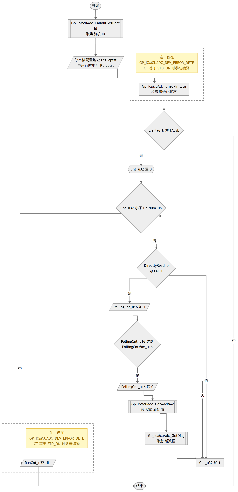 |
| 调用 | Gp_IoMcuAdc_CalloutGetCoreId Gp_IoMcuAdc_CheckInitStu Gp_IoMcuAdc_GetAdcRaw Gp_IoMcuAdc_GetDiag |
| 访问的静态全局变量 | Gp_IoMcuAdc_rtCont_lcatst |
LLD-KEY: Gp_IoMcuAdc::5.2.3.2::Gp_IoMcuAdc_MainFunction
| Service name | Gp_IoMcuAdc_GetAdcSigDiag |
| Syntax | Std_ReturnType Gp_IoMcuAdc_GetAdcSigDiag(uint16 Id_u16, uint32* Diag_pu32) |
| Service ID[hex] | None |
| Sync/Async | Synchronous |
| Reentrancy | Non_Reentrancy |
| Parameters(in) | Id_u16uint16; signal ID 0~0xFFFF |
| Parameters(inout) | None |
| Parameters(out) | Diag_pu32uint32*; pointer to buffer of diagnostic data |
| Return value | Std_ReturnType - E_OK/E_NOT_OK |
| Description | 本函数是对外接口，按信号 ID 提供诊断数据。先经 CalloutGetCoreId 取当前核 ID 并取本核配置与运行时缓冲区地址；DEV_ERROR_DETECT 开启时依次执行 CheckInitStu 与 CheckArgIn 两项检查（ID 在配置范围内、输出指针非空、信号 ID 属于当前核），两项检查逐一执行不因前一项报错而跳过，以覆盖全部错误状态记录。全部通过后按信号映射配置取得通道索引：该通道配置为 DirectlyRead_b 时调用 GetDiag 即时读取诊断数据（同时写入缓冲区供调试观察）后输出，否则直接输出 MainFunction 周期读取并存入缓冲区的诊断数据，返回 E_OK；任一检查未通过则返回 E_NOT_OK。本函数应在已使能的核上、Init 完成之后调用。 |
| 流程图 | 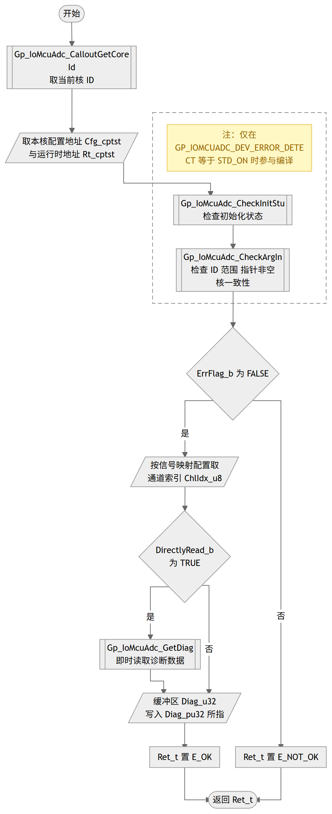 |
| 调用 | Gp_IoMcuAdc_CalloutGetCoreId Gp_IoMcuAdc_CheckInitStu Gp_IoMcuAdc_CheckArgIn Gp_IoMcuAdc_GetDiag |
| 访问的静态全局变量 | Gp_IoMcuAdc_rtCont_lcatst |
LLD-KEY: Gp_IoMcuAdc::5.2.3.2::Gp_IoMcuAdc_GetAdcSigDiag
| Service name | Gp_IoMcuAdc_GetAdcSigAdcRaw |
| Syntax | Std_ReturnType Gp_IoMcuAdc_GetAdcSigAdcRaw(uint16 Id_u16, uint16* AdcRaw_pu16) |
| Service ID[hex] | None |
| Sync/Async | Synchronous |
| Reentrancy | Non_Reentrancy |
| Parameters(in) | Id_u16uint16; signal ID 0~0xFFFF |
| Parameters(inout) | None |
| Parameters(out) | AdcRaw_pu16uint16*; pointer to buffer of ADC raw |
| Return value | Std_ReturnType - E_OK/E_NOT_OK |
| Description | 本函数是对外接口，按信号 ID 提供 ADC 原始值。先经 CalloutGetCoreId 取当前核 ID 并取本核配置与运行时缓冲区地址；DEV_ERROR_DETECT 开启时依次执行 CheckInitStu 与 CheckArgIn 两项检查（ID 在配置范围内、输出指针非空、信号 ID 属于当前核），两项检查逐一执行不因前一项报错而跳过，以覆盖全部错误状态记录。全部通过后按信号映射配置取得通道索引：该通道配置为 DirectlyRead_b 时调用 GetAdcRaw 即时读取 ADC 原始值（同时写入缓冲区供调试观察）后输出，否则直接输出 MainFunction 周期读取并存入缓冲区的 ADC 原始值，返回 E_OK；任一检查未通过则返回 E_NOT_OK。本函数应在已使能的核上、Init 完成之后调用。 |
| 流程图 | 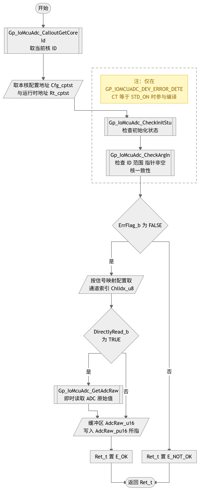 |
| 调用 | Gp_IoMcuAdc_CalloutGetCoreId Gp_IoMcuAdc_CheckInitStu Gp_IoMcuAdc_CheckArgIn Gp_IoMcuAdc_GetAdcRaw |
| 访问的静态全局变量 | Gp_IoMcuAdc_rtCont_lcatst |
LLD-KEY: Gp_IoMcuAdc::5.2.3.2::Gp_IoMcuAdc_GetAdcSigAdcRaw
| Service name | Gp_IoMcuAdc_CheckInitStu |
| Syntax | boolean Gp_IoMcuAdc_CheckInitStu(Gp_IoMcuAdc_IfIdType IfId_t, Gp_IoMcuAdc_RunTimeType* Rt_cptst) |
| Service ID[hex] | None |
| Sync/Async | Synchronous |
| Reentrancy | Non_Reentrancy |
| Parameters(in) | IfId_tGp_IoMcuAdc_IfIdType; interface ID |
Rt_cptstconst Gp_IoMcuAdc_RunTimeType*; pointer to FC runtime buffer | |
| Parameters(inout) | None |
| Parameters(out) | None |
| Return value | boolean - TRUE/FALSE |
| Description | 本函数检查模块初始化状态，供各对外接口与 MainFunction 在入口处调用。DET 缓冲区中 InitStu_t 为 INITED 时返回 FALSE（无错误）；否则返回 TRUE，并在 DET 缓冲区记录接口 ID 与 ERRSTU_UNINITED 未初始化错误。DET 缓冲区只保留最新一条错误记录，已有记录会被覆盖，便于集成排错。本函数仅在 GP_IOMCUADC_DEV_ERROR_DETECT 等于 STD_ON 时参与编译。 |
| 流程图 | 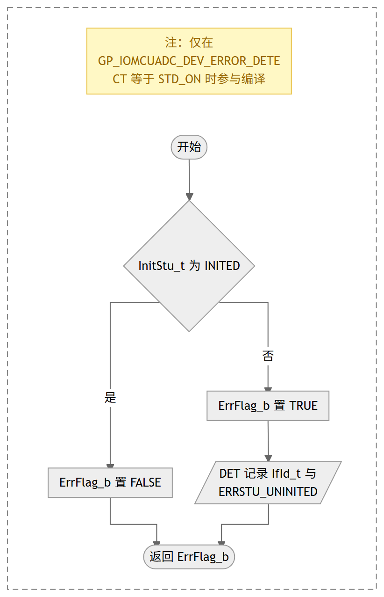 |
| 条件编译 | GP_IOMCUADC_DEV_ERROR_DETECT 生效时参与编译 |
| 被调用 | Gp_IoMcuAdc_MainFunction, Gp_IoMcuAdc_GetAdcSigDiag, Gp_IoMcuAdc_GetAdcSigAdcRaw |
LLD-KEY: Gp_IoMcuAdc::5.2.4.2::Gp_IoMcuAdc_CheckInitStu
| Service name | Gp_IoMcuAdc_CheckArgIn |
| Syntax | boolean Gp_IoMcuAdc_CheckArgIn(Gp_IoMcuAdc_IfIdType IfId_t, Gp_IoMcuAdc_AdcSigMappingCfgType* SmCfg_cptst, Gp_IoMcuAdc_RunTimeType* Rt_cptst, uint32 ChkCoreId_u32, uint16 ChkId_u16, uint8* ChkArgIn_pu8) |
| Service ID[hex] | None |
| Sync/Async | Synchronous |
| Reentrancy | Non_Reentrancy |
| Parameters(in) | IfId_tGp_IoMcuAdc_IfIdType; interface ID |
SmCfg_cptstconst Gp_IoMcuAdc_AdcSigMappingCfgType*; pointer to FC signal mapping Cfg | |
Rt_cptstconst Gp_IoMcuAdc_RunTimeType*; pointer to FC runtime buffer | |
ChkCoreId_u32uint32; core ID 0~5 | |
ChkId_u16uint16; signal ID 0~0xFFFF | |
ChkArgIn_pu8uint8*; pointer to buffer of output argument | |
| Parameters(inout) | None |
| Parameters(out) | None |
| Return value | boolean - TRUE/FALSE |
| Description | 本函数检查对外接口的入参有效性，供 GetAdcSigDiag 与 GetAdcSigAdcRaw 在入口处调用。信号 ID 小于配置信号总数 GP_IOMCUADC_SIG_NUM 且输出指针非空时，再检查该信号在映射配置中的核 ID 与当前核是否一致：一致则返回 FALSE（无错误），不一致则记录 ERRSTU_SIG_MAP_INCONSISTENT（信号不属于本核）并返回 TRUE；ID 越界或指针为空时记录 ERRSTU_INVALID_ARG 并返回 TRUE。错误记录含接口 ID，DET 缓冲区只保留最新一条。本函数仅在 GP_IOMCUADC_DEV_ERROR_DETECT 等于 STD_ON 时参与编译。 |
| 流程图 | 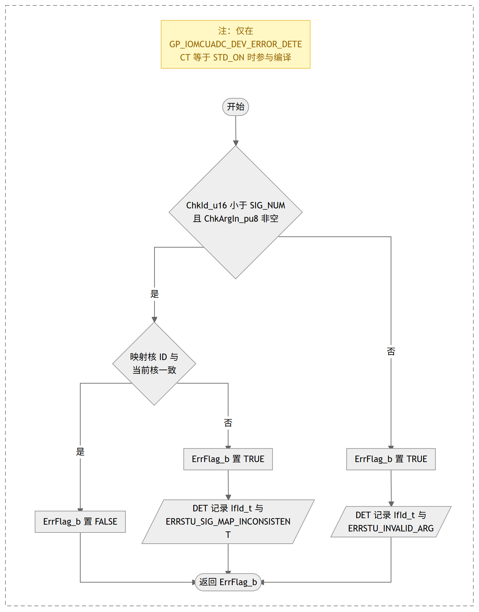 |
| 条件编译 | GP_IOMCUADC_DEV_ERROR_DETECT 生效时参与编译 |
| 被调用 | Gp_IoMcuAdc_GetAdcSigDiag, Gp_IoMcuAdc_GetAdcSigAdcRaw |
LLD-KEY: Gp_IoMcuAdc::5.2.4.2::Gp_IoMcuAdc_CheckArgIn
| Service name | Gp_IoMcuAdc_GetDiag |
| Syntax | void Gp_IoMcuAdc_GetDiag(Gp_IoMcuAdc_CfgType* Cfg_cptst, Gp_IoMcuAdc_RunTimeType* Rt_cptst, uint32 CoreId_u32, uint8 ChlIdx_u8) |
| Service ID[hex] | None |
| Sync/Async | Synchronous |
| Reentrancy | Non_Reentrancy |
| Parameters(in) | Cfg_cptstconst Gp_IoMcuAdc_CfgType*; pointer to FC Cfg |
Rt_cptstconst Gp_IoMcuAdc_RunTimeType*; pointer to FC runtime buffer | |
CoreId_u32uint32; core ID 0~5 | |
ChlIdx_u8uint8; channel index 0~255 | |
| Parameters(inout) | None |
| Parameters(out) | None |
| Return value | void |
| Description | 本函数是内部函数，获取单个通道的诊断数据，被 MainFunction 按配置周期调用，也被 GetAdcSigDiag 在直接读通道上即时调用。信号配置 DiagCalloutFunc_b 为 TRUE 时经 CalloutGetDiag 由集成方特殊处理：返回 FALSE 时在 AdcSigErr_t 中置 CALLOUT_GET_DIAG_FAILED 位，返回 TRUE 时将诊断数据写入本通道缓冲区；为 FALSE 时本版本无诊断功能，缓冲区直接写入 0——有诊断需求的集成方应配置 Callout 方式并在 Callout 函数中实现。 |
| 流程图 | 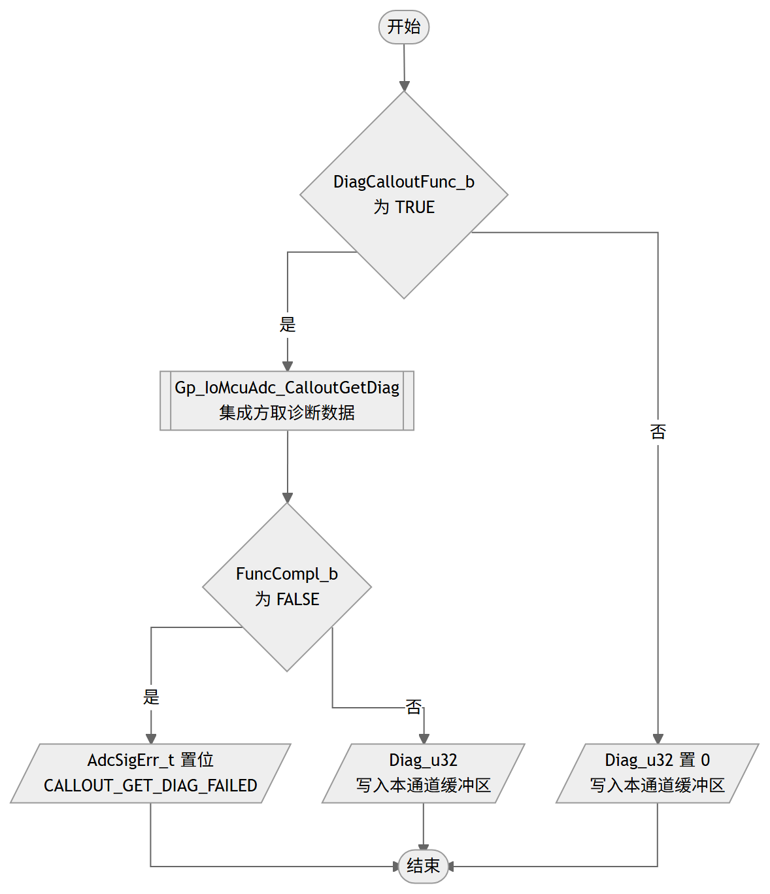 |
| 调用 | Gp_IoMcuAdc_CalloutGetDiag |
| 被调用 | Gp_IoMcuAdc_MainFunction, Gp_IoMcuAdc_GetAdcSigDiag |
LLD-KEY: Gp_IoMcuAdc::5.2.4.2::Gp_IoMcuAdc_GetDiag
| Service name | Gp_IoMcuAdc_GetAdcRaw |
| Syntax | void Gp_IoMcuAdc_GetAdcRaw(Gp_IoMcuAdc_CfgType* Cfg_cptst, Gp_IoMcuAdc_RunTimeType* Rt_cptst, uint32 CoreId_u32, uint8 ChlIdx_u8) |
| Service ID[hex] | None |
| Sync/Async | Synchronous |
| Reentrancy | Non_Reentrancy |
| Parameters(in) | Cfg_cptstconst Gp_IoMcuAdc_CfgType*; pointer to FC Cfg |
Rt_cptstconst Gp_IoMcuAdc_RunTimeType*; pointer to FC runtime buffer | |
CoreId_u32uint32; core ID 0~5 | |
ChlIdx_u8uint8; channel index 0~255 | |
| Parameters(inout) | None |
| Parameters(out) | None |
| Return value | void |
| Description | 本函数是内部函数，获取单个通道的 ADC 原始值，被 MainFunction 按配置周期调用，也被 GetAdcSigAdcRaw 在直接读通道上即时调用。信号配置 AdcRawCalloutFunc_b 为 TRUE 时经 CalloutGetAdcRaw 由集成方特殊处理：返回 FALSE 时在 AdcSigErr_t 中置 CALLOUT_GET_ADCRAW_FAILED 位，返回 TRUE 时将原始值写入本通道缓冲区。否则从配置的结果地址 ResRegOrBuf_pu32 读取 32 位转换结果：AdcRawCheckValidity_b 为 TRUE 时经 CheckAdcRawValidity 检查新数据位，转换完成则取低 16 位写入缓冲区，未完成则写入 ADCRAW_INVALID（供需要等待并确认转换完成的特殊应用识别）；为 FALSE 时不做检查直接取低 16 位写入。 |
| 流程图 | 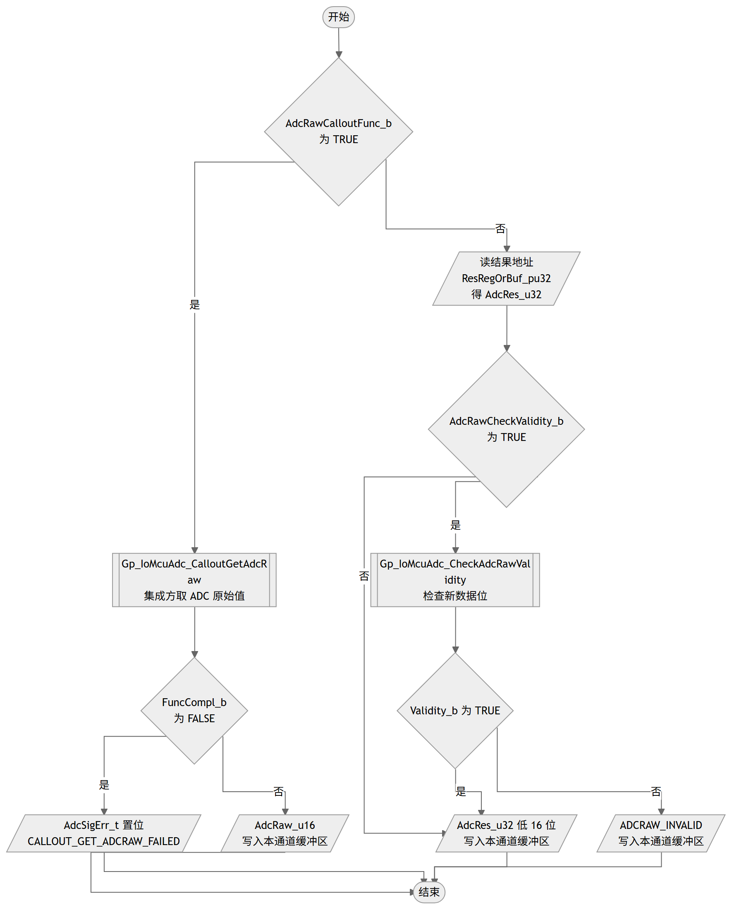 |
| 调用 | Gp_IoMcuAdc_CalloutGetAdcRaw Gp_IoMcuAdc_CheckAdcRawValidity |
| 被调用 | Gp_IoMcuAdc_MainFunction, Gp_IoMcuAdc_GetAdcSigAdcRaw |
LLD-KEY: Gp_IoMcuAdc::5.2.4.2::Gp_IoMcuAdc_GetAdcRaw
| Service name | Gp_IoMcuAdc_CheckAdcRawValidity |
| Syntax | boolean Gp_IoMcuAdc_CheckAdcRawValidity(uint32 AdcRes_u32) |
| Service ID[hex] | None |
| Sync/Async | Synchronous |
| Reentrancy | Non_Reentrancy |
| Parameters(in) | AdcRes_u32uint32; ADC result |
| Parameters(inout) | None |
| Parameters(out) | None |
| Return value | boolean - TRUE/FALSE |
| Description | 本函数检查 ADC 转换结果的新数据位（转换完成标志），有效返回 TRUE，否则返回 FALSE，被 GetAdcRaw 在配置检查有效性时调用。新数据位的位置依赖 GP_IOMCUADC_SPEC_DEP_IF 配置的微控制器：AURIX2G 与 TRAVEO2G 检查 bit31，STELLARPX 检查 bit19，AURIX3G 不做检查恒为有效；SPEC_DEP_IF 为 UNDEFINED 时函数体为空，保持初值 FALSE。 |
| 流程图 | 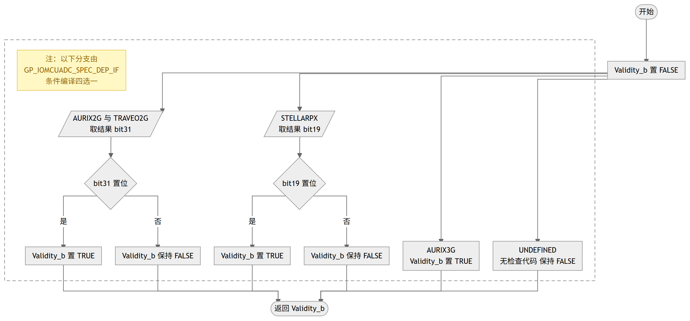 |
| 被调用 | Gp_IoMcuAdc_GetAdcRaw |
LLD-KEY: Gp_IoMcuAdc::5.2.4.2::Gp_IoMcuAdc_CheckAdcRawValidity
| 状态 | 说明 |
|---|---|
| UNINITED | 未初始化状态，上电后 DET 缓冲区清零的初态；DEV_ERROR_DETECT 开启时 MainFunction 与各 GetAdcSig 接口在入口检查到该状态仅记录 UNINITED 错误，不做处理 |
| INITED | 初始化完成状态，Gp_IoMcuAdc_Init 成功（Adc_SetupResultBuffer 返回 E_OK 且 CalloutInit 返回 TRUE）后进入；MainFunction 周期读取各通道 ADC 原始值与诊断数据，GetAdcSig 接口正常输出 |
| INIT_FAILED | 初始化失败状态，Init 中 Adc_SetupResultBuffer 返回 E_NOT_OK 或 CalloutInit 返回 FALSE 时进入并记录 ERRSTU_INIT_FAILED；可通过重新调用 Init 恢复为 INITED |
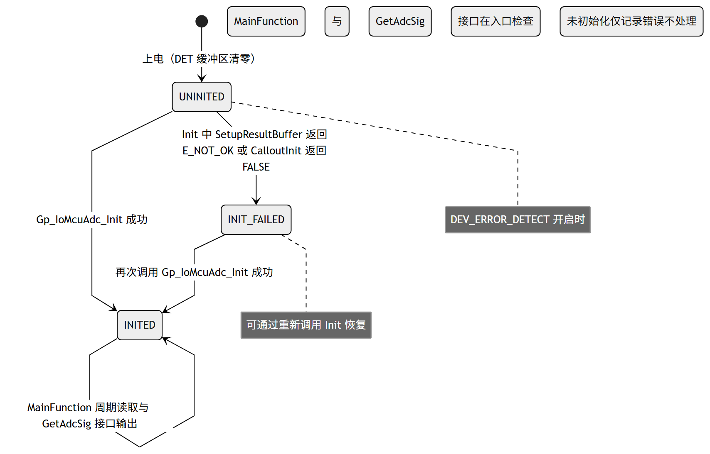
LLD-KEY: Gp_IoMcuAdc::5.3.1::Gp_IoMcuAdc_初始化状态机
Gp_IoMcuAdc initialization, include channel buffer initialization and MCAL ADC hardware trigger setup
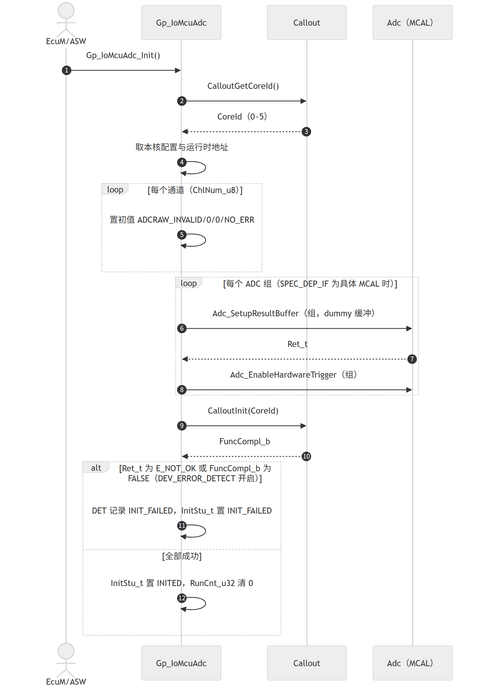
LLD-KEY: Gp_IoMcuAdc::5.3.2::Initialization
Gp_IoMcuAdc runtime, include periodic MainFunction reading and AdcSig interface output
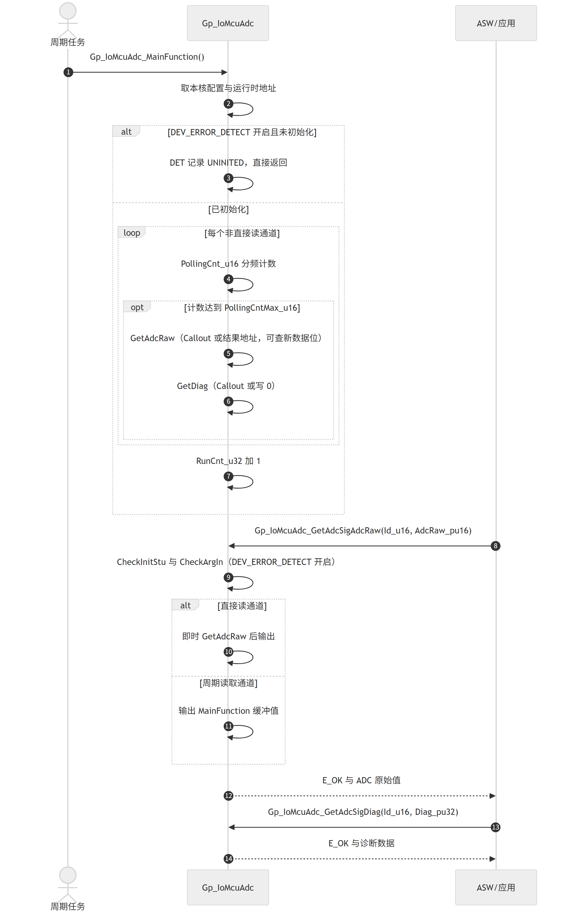
LLD-KEY: Gp_IoMcuAdc::5.3.2::Runtime
Gp_IoMcuAdc_CalloutGetAdcRaw| Service name | Gp_IoMcuAdc_CalloutGetAdcRaw |
| Syntax | boolean Gp_IoMcuAdc_CalloutGetAdcRaw(uint32 CoreId_u32, uint8 ChlIdx_u8, uint16* AdcRaw_pu16) |
| Sync/Async | Synchronous |
| Reentrancy | Non_Reentrancy |
| Parameters(in) | CoreId_u32uint32; core ID 0~5 |
ChlIdx_u8uint8; channel index 0~255 | |
| Parameters(inout) | None |
| Parameters(out) | AdcRaw_pu16uint16*; pointer to buffer of ADC raw |
| Return value | boolean - TRUE/FALSE |
| Description | 集成方实现的 ADC 原始值获取函数，用于需要特殊处理的通道（信号配置 AdcRawCalloutFunc_b 为 TRUE）。按核 ID 与通道索引经输出参数返回 16 位 ADC 原始值，返回值表示是否完成（TRUE 成功）。Gp_IoMcuAdc_GetAdcRaw 调用它；返回 FALSE 时在 AdcSigErr_t 中置 CALLOUT_GET_ADCRAW_FAILED 位，成功时原始值写入本通道缓冲区。推断，待确认 |
| 模块内调用者 | Gp_IoMcuAdc_GetAdcRaw |
LLD-KEY: Gp_IoMcuAdc::6.2::Gp_IoMcuAdc_CalloutGetAdcRaw
Gp_IoMcuAdc_CalloutGetCoreId| Service name | Gp_IoMcuAdc_CalloutGetCoreId |
| Syntax | uint32 Gp_IoMcuAdc_CalloutGetCoreId(void) |
| Sync/Async | Synchronous |
| Reentrancy | Non_Reentrancy |
| Parameters(in) | None |
| Parameters(inout) | None |
| Parameters(out) | None |
| Return value | uint32 - core ID |
| Description | 集成方实现，返回当前核 ID。返回值必须合法（0~5），模块将其直接用作 cfgCont 与 rtCont 的核索引，不做校验。Gp_IoMcuAdc_Init、Gp_IoMcuAdc_MainFunction、Gp_IoMcuAdc_GetAdcSigDiag、Gp_IoMcuAdc_GetAdcSigAdcRaw 在入口处均调用它取得本核配置与运行时缓冲区。推断，待确认 |
| 模块内调用者 | Gp_IoMcuAdc_Init, Gp_IoMcuAdc_MainFunction, Gp_IoMcuAdc_GetAdcSigDiag, Gp_IoMcuAdc_GetAdcSigAdcRaw |
LLD-KEY: Gp_IoMcuAdc::6.2::Gp_IoMcuAdc_CalloutGetCoreId
Gp_IoMcuAdc_CalloutGetDiag| Service name | Gp_IoMcuAdc_CalloutGetDiag |
| Syntax | boolean Gp_IoMcuAdc_CalloutGetDiag(uint32 CoreId_u32, uint8 ChlIdx_u8, uint32* Diag_pu32) |
| Sync/Async | Synchronous |
| Reentrancy | Non_Reentrancy |
| Parameters(in) | CoreId_u32uint32; core ID 0~5 |
ChlIdx_u8uint8; channel index 0~255 | |
| Parameters(inout) | None |
| Parameters(out) | Diag_pu32uint32*; pointer to buffer of diagnostic data |
| Return value | boolean - TRUE/FALSE |
| Description | 集成方实现的诊断数据获取函数，用于需要特殊处理的通道（信号配置 DiagCalloutFunc_b 为 TRUE）。按核 ID 与通道索引经输出参数返回 32 位诊断数据，返回值表示是否完成（TRUE 成功）。Gp_IoMcuAdc_GetDiag 调用它；返回 FALSE 时在 AdcSigErr_t 中置 CALLOUT_GET_DIAG_FAILED 位，成功时诊断数据写入本通道缓冲区。推断，待确认 |
| 模块内调用者 | Gp_IoMcuAdc_GetDiag |
LLD-KEY: Gp_IoMcuAdc::6.2::Gp_IoMcuAdc_CalloutGetDiag
Gp_IoMcuAdc_CalloutInit| Service name | Gp_IoMcuAdc_CalloutInit |
| Syntax | boolean Gp_IoMcuAdc_CalloutInit(uint32 CoreId_u32) |
| Sync/Async | Synchronous |
| Reentrancy | Non_Reentrancy |
| Parameters(in) | CoreId_u32uint32; core ID 0~5 |
| Parameters(inout) | None |
| Parameters(out) | None |
| Return value | boolean - TRUE/FALSE |
| Description | 集成方实现的额外初始化钩子，返回完成标志（TRUE 表示成功）。Gp_IoMcuAdc_Init 在通道初值设置与 MCAL 组初始化之后调用；DEV_ERROR_DETECT 开启时返回 FALSE 将导致 DET 记录 IFID_INIT 与 ERRSTU_INIT_FAILED，InitStu_t 置 INIT_FAILED。推断，待确认 |
| 模块内调用者 | Gp_IoMcuAdc_Init |
LLD-KEY: Gp_IoMcuAdc::6.2::Gp_IoMcuAdc_CalloutInit